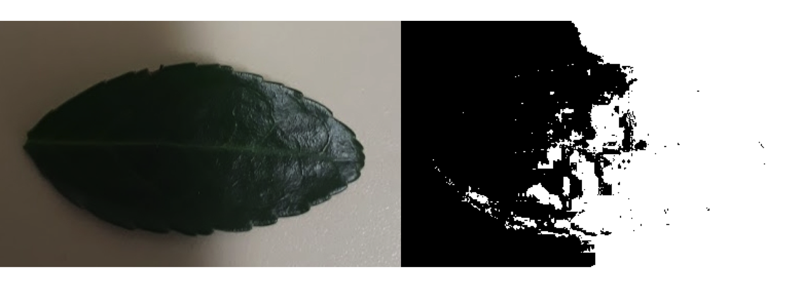
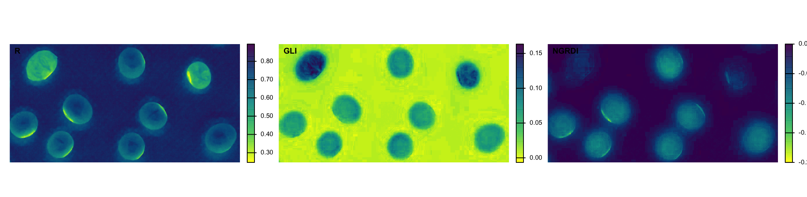
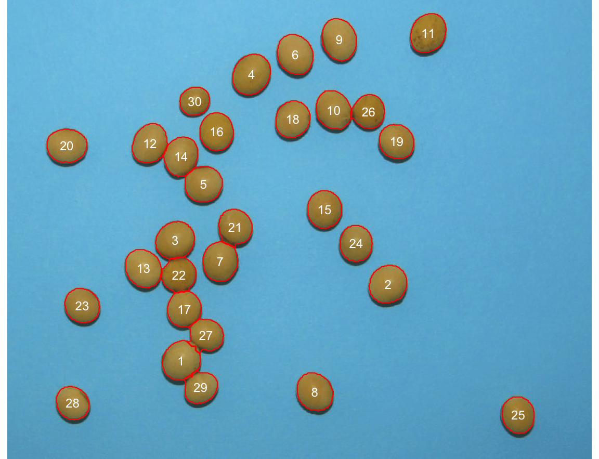
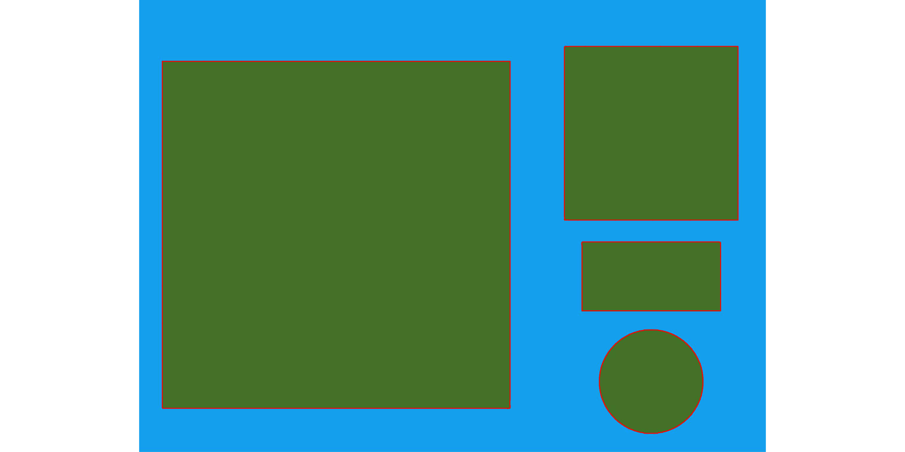
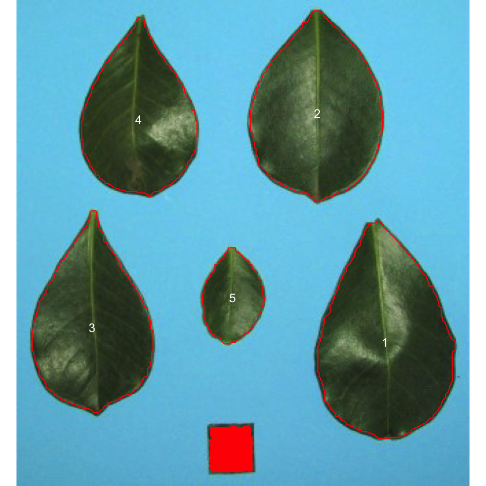
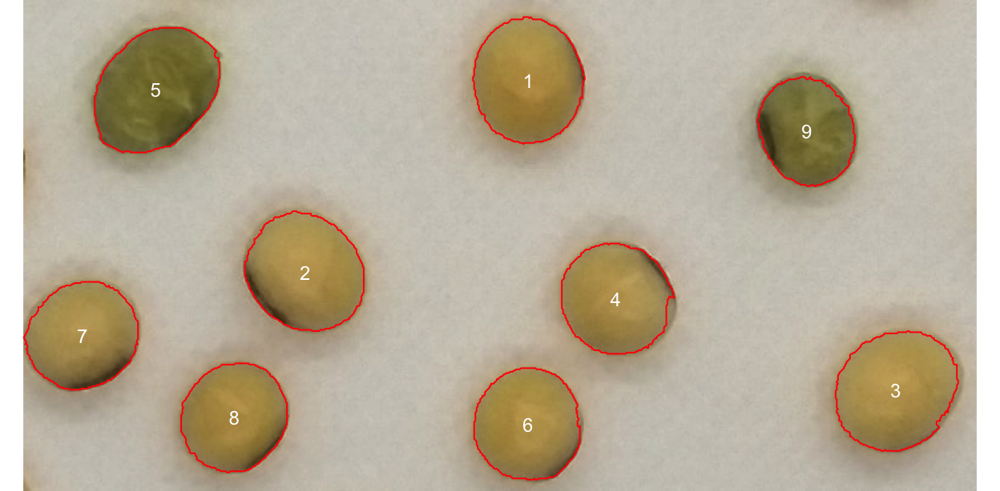
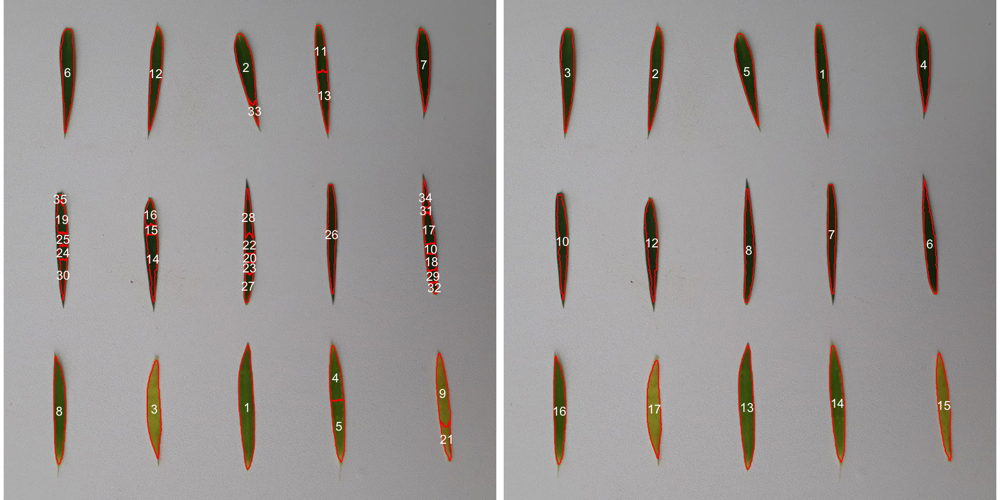
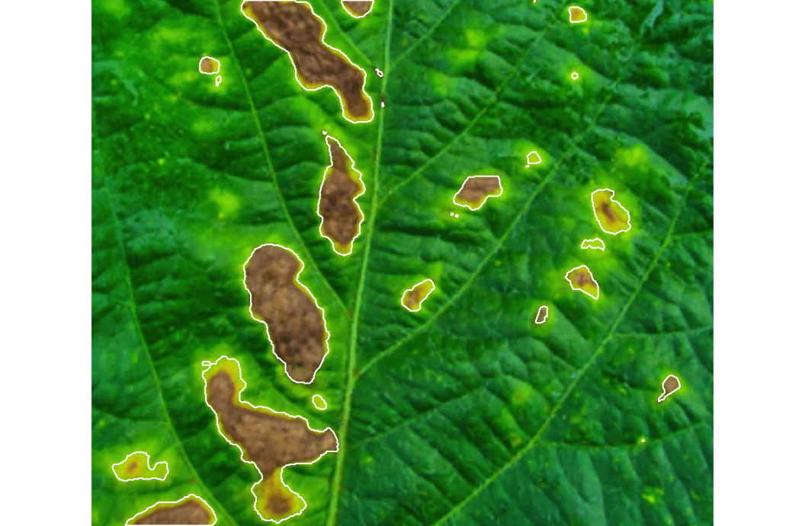

Regional Training Course on Experimental Design and Data Analysis for the Advancement of Mutant Populations (RER5030)
12 November 2026
| Time | Activity |
|---|---|
| 13:30 | Lecture. From a photograph to a number; taking images that can be analysed; counting, measuring and scale; colour and disease severity |
| 15:00 | Practical. Image analysis in R with pliman, in pairs |
| 16:30 | Q&A on imaging set-ups |
Goal: leave able to turn a photograph taken with a phone into trait values for a trial, and to check that those values can be trusted.
Day4_afternoon.Rproj00_install_packages.R once: it installs pliman and EBImage (a few minutes)pliman: nothing else to downloadNo Git needed: the ZIP is your own copy.
High-throughput phenotyping does not need expensive equipment: a phone, a tray and R are enough to start.
| Platform | Typical use |
|---|---|
| Smartphone, stand and plain tray | Seed number, size and colour; leaf area; disease on detached leaves |
| Flatbed scanner | Seeds, grains, leaves, roots; known resolution (dpi) |
| Fixed RGB camera on a frame | Canopy cover and greenness of a plot, over time |
| Camera modified for near infrared | Indices that need NIR (NDVI) |
| Drone with RGB or multispectral camera | Plant height, canopy cover and vigour of the whole trial |
From the cheapest to the most expensive. Drones: only briefly, at the end.
Practical: Tutorial: download real field photos and open them in R.
Mutuvi, S. et al. (2026), DOI 10.31220/agriRxiv.2026.00491
| Decision | What to do |
|---|---|
| Background | One plain colour that the objects do not have |
| Light | Even and diffuse, the same for all images; no direct sun |
| Scale | A reference object of known size in every image, or a known dpi |
| Objects | Separated, flat, not overlapping |
| File name | The plot identifier: plot_101.jpg |
| Camera | Same camera and settings; keep the original files |

If library(pliman) prints “Package EBImage is required”, the Bioconductor step is missing.
pliman (Olivoto 2022)image_pliman("name.jpg") reads them: the examples run on any computer

30 seeds, touching seeds separated. We counted the labels one by one: correct. Every automatic count needs this check.
id area perimeter length width circularity
1 1 2279 183.5097 56.57747 51.54190 14.77657
2 2 2289 178.1960 56.53366 52.36854 13.87235
3 3 2310 181.0244 57.20139 51.99249 14.18607
4 4 2436 185.6102 61.02182 51.02160 14.14250
5 5 2159 171.7107 54.01135 50.53687 13.65658 id area width length
1 1 99.81199 11.10659 11.12135
2 2 24.99414 6.50271 6.51376
3 3 7.00615 2.99284 2.99197
4 4 7.93396 1.98532 3.98985
objects_300dpi.jpg contains a square of 10 x 10 cm. The software finds 11.11 x 11.12 cm, 99.8 cm²: an error of about 0.3%. Validate with something of known size.

id area length width
1 1 43.429695 9.923322 6.320010
2 2 37.242871 8.706688 6.069490
3 3 32.920354 9.223013 5.533824
4 4 28.837758 8.217528 5.271185
5 5 8.900688 4.418591 2.839530
id NGRDI GLI
1 1 -0.082 0.066
2 2 -0.077 0.058
3 3 -0.071 0.060
4 4 -0.073 0.057
5 5 -0.028 0.115
6 6 -0.076 0.064
7 7 -0.072 0.058
8 8 -0.081 0.065
9 9 -0.031 0.100 class n
1 green 2
2 yellow 7The threshold must come from data: fix it on seeds classified by an expert, check it on another set. If colour is a proxy (yellow intensity for carotenoids), calibrate against laboratory values and test on new samples. That is a prediction problem: tomorrow’s machine learning session.

watershed = FALSE, 15 objects: one per leaf id area length width NGRDI GLI yellow
1 15 1779 146.8624 16.14967 -0.04648931 0.1809757 TRUE
2 17 1839 134.0336 18.95190 -0.03120197 0.1769517 TRUETwo of the 15 leaves have NGRDI below zero: the two yellow ones. The same logic gives a stay-green or senescence score without a colour chart.

dir <- file.path(tempdir(), "plots")
dir.create(dir, showWarnings = FALSE)
src <- system.file("tmp_images", package = "pliman")
invisible(file.copy(file.path(src, c("soybean_touch.jpg", "soy_green.jpg", "flax_grains.jpg")),
file.path(dir, c("plot_101.jpg", "plot_102.jpg", "plot_103.jpg"))))
batch <- analyze_objects(pattern = "plot_", dir_original = dir, plot = FALSE, verbose = FALSE)
batch$statistics# A tibble: 3 × 7
img n area_mean area_min area_max area_sum area_sd
<chr> <int> <dbl> <dbl> <dbl> <dbl> <dbl>
1 plot_101 30 2051. 1366 2436 61539 230.
2 plot_102 9 7079. 5707 8370 63713 865.
3 plot_103 156 44.5 5 4679 6937 374.The three images only show the structure: they are not three plots of a trial.
From here the image traits are traits like any other: they go to the single-trial analysis of this morning (mixed model, spatial correction if justified), and their heritability tells us if they are precise enough to select on.
Distance from the line abline(0, 1) that is the same for all samples is a bias that can be corrected. Scatter around it is error that cannot.
| Pitfall | What to do |
|---|---|
| Uneven light or shadows | Diffuse light, same set-up in all images |
| One set of parameters for all images | Test on 5 to 10 images, then keep them |
| No scale | Reference object or known dpi |
| Not looking at the labelled image | Inspect the labelled image of a sample |
| Colour threshold from 9 seeds | Fix on a training set, check on another |
| Image trait without validation | Compare with manual measurements |
| Different cameras between trials | Same camera and settings; keep the originals |
Open the files of the ZIP in this order:
Image1_count_and_measure.Rmd: count seeds, size, scale by dpi and by reference object (30 min)Image2_colour_leaves_severity.Rmd: colour, flax leaves, your own visual score, disease severity (30 min)Image3_folder_to_field_book.Rmd: a folder of images, the field book, validation, the model (30 min)Image4_download_Artemis_photos_optional.Rmd or the Artemis tutorial: real field photographsOptional: bring 3 to 5 photos from your phone and analyse them in my_images/.
pliman counts, measures size and shape, describes colour and severity, for one image or a folderolivoto.github.io/plimanLuis Fernando Delgado Muñoz
Luis Fernando Delgado Muñoz | RTC RER5030 | Day 4: Image analysis